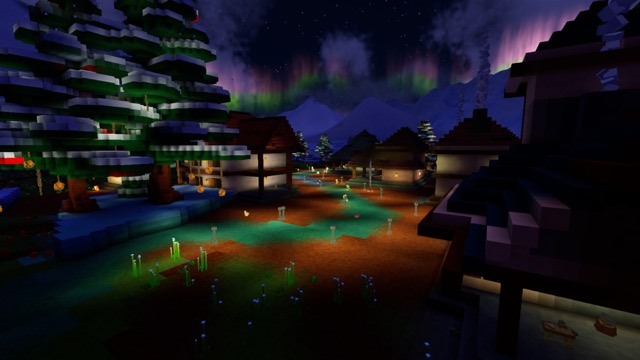
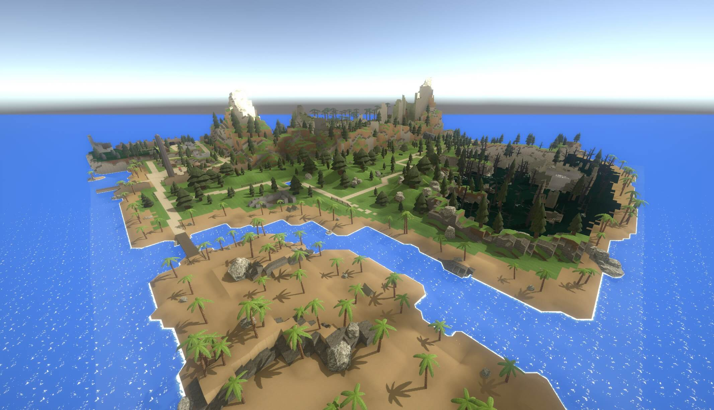
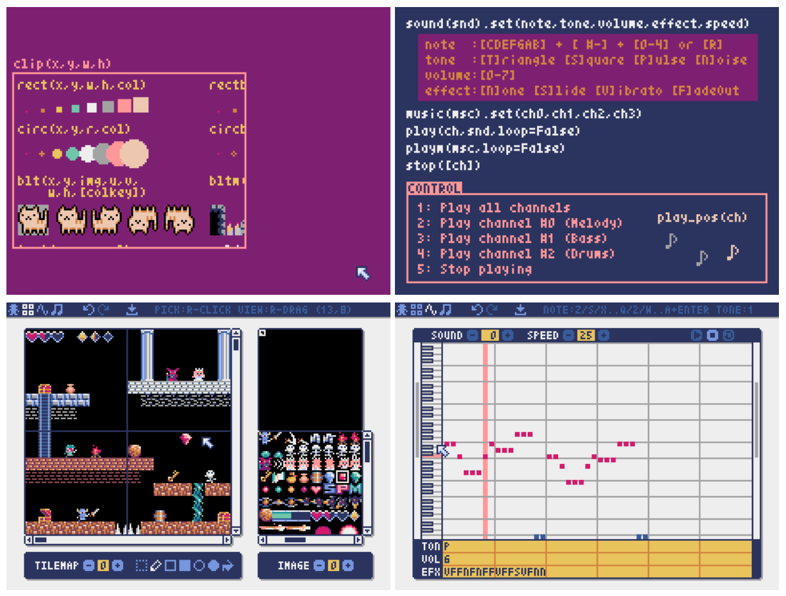

This Month in Rust GameDev #29 - December 2021
Welcome to the 29th issue of the Rust GameDev Workgroup's monthly newsletter. Rust is a systems language pursuing the trifecta: safety, concurrency, and speed. These goals are well-aligned with game development. We hope to build an inviting ecosystem for anyone wishing to use Rust in their development process! Want to get involved? Join the Rust GameDev working group!
You can follow the newsletter creation process by watching the coordination issues. Want something mentioned in the next newsletter? Send us a pull request. Feel free to send PRs about your own projects!
- Rust GameDev Meetup
- Game Updates
- Learning Material Updates
- Engine Updates
- Tooling Updates
- Library Updates
- Other News
- Discussions
- Requests for Contribution
Rust GameDev Meetup

The thirteenth Rust Gamedev Meetup happened in December. You can watch the recording of the meetup here on Youtube. The meetups take place on the second Saturday every month via the Rust Gamedev Discord server and are also streamed on Twitch.
Game Updates
Tet-Rust
Screenshot of Tet-Rust
Tet-Rust (GitHub) by @Syn-Nine is a mini game based on the famous falling puzzle block game.
The game was created to exercise Syn9's Rust Mini Game Framework and is part of an open source repository of several mini-games that use this framework.
The Beast of Monte Carlo
Screenshot of The Beast of Monte Carlo
The Beast of Monte Carlo by @Syn-Nine is a mini role-playing game in development to help work out new features for Syn9's Rust Mini Game Framework.
This month's progress included:
- prototyping tilemap and frame-based animation to make a simple walkaround engine
- creating a general purpose maze generation algorithm and porting random world map generation from C++ to Rust
- creating new sprite artwork and animation, as well as mocking up the battle system
The gameplay and art are influenced by games such as Final Fantasy VI and Lufia II with a heavy focus on procedural content generation.
10x Sprint Master
10x Sprint Master (GitHub) by @E_net4 is a simulation game where you play the role of a software development lead engineer. Write tasks, coordinate a team of developers, fix bugs and manage feature delivery, while trying to mitigate the torments of technical debt.
The game was submitted to GitHub Game Off 2021, and was written using Yew with graphics done in pure HTML and CSS.
The author also published a blog post on Dev.to about the game's technical and social dimensions.
Molecoole

Molecoole is a top-down shooter roguelike where you build your character from different atoms. Each atom has a unique ability providing tons of variety between playthroughs. It's made using the Bevy Engine.
This month Molecoole devs focused on adding more variety: different enemies, atoms etc...
They also launched their first teaser video, it gives us a glimpse into 3 different bioms, bosses, enemies and more.
Veloren
 A peaceful winter night
Veloren is an open world, open-source voxel RPG inspired by Dwarf Fortress and Cube World.
In December, Veloren ran a Christmas week. From the 20th to the 30th of December, there were several winter-themed changes on the main server. Snow was everywhere, decorations were added to locations, and NPC wore Christmas hats! The 150th Veloren blog was also released in December. An experimental new section of the newsletter gives video recaps of the last week's blog post.
The ability to edit the appearance of characters was added to the game. Work was done on armor tooltips to make them more clear. Skiing is in the works, with some work to still be done on animations and physics. New images were created for item displays, which are now stored as .vox files.
December's full weekly devlogs: "This Week In Veloren...": #149, #150, #151, #152.
Country Slice

Country Slice is @anastasiaopara's hobby project, where users can draw a small scene, and their input is amplified with real-time procedural generation.
This month's biggest update was adding an ability to draw paths that, if intersected with walls, automatically generate arches. You can read a Twitter thread that briefly covers how it was optimized to run in 1-2ms.
Fish Fight

Fish Fight (GitHub, Discord, website)
Fish Fight is a tactical 2D shooter, played by up to 4 players. It is also a 2D-pixels-platformer game engine optimized for modding.
In-game level editor was released, along with an editor tutorial. A retrospective devlog was posted: Fish Fight's past, present, and future.
BITGUN
BITGUN (Steam, Twitter, Discord) by @LogLogGames is an action roguelike zombie shooter with lots of blood. The game is built using Godot and Rust (via godot-rust).
They are now heading to a public playtest via Steam and you can signup here to play the game for free in exchange for a short feedback. They recently added cutscenes, which are telling a bit more story about this post-apocalyptic zombie world where people are scared of getting infected and supplies are rare. They also launched a project Name your zombie where you can get your Twitter or TikTok username as a name of a random zombie and a tombstone in the game!
vange-rs WebAssembly Port
vange.rs is the project of re-implementing the Vangers game (from 1998) in Rust using modern development practices, parallel computations, and GPU.
This month @caiiiycuk ported it to the "wasm32-unknown-emscripten" target via wgpu's GLES3 backend and posted an article about the process and observations.
The web version of vange-rs can be played online here.
Discussions: /r/rust_gamedev
Bevy Combat

Bevy Combat by @ElliotB256 is a WIP sci-fi battle simulation written using Bevy.
Some of the current features:
- Combat and targetting AI;
- Simple weapons (instant hit), damage, health, shields, and mortality;
- Death animations and explosions;
Check out the web demo here.
Rust City

@oliviff is working on a city building game. Some of this month's updates:
- Basic zoning placeholders when building roads.
- Advanced zoning for residential, commercial, and industry.
- Populating zoned areas based on demand.
- Buildings don't function unless they have utilities.
- Finances and transactions
- Population tracker.
- pipes required for a house to receive water.
- cables required for a house to receive electricity.
- build mode for pipes and cables.
- UI to toggle different layers visibility.
Antorum Isles (pka Antorum Online)

Antorum Isles is a micro-multiplayer online role-playing game by @dooskington. The game server is written in Rust, and the client is Unity-based.
Main highlights of the latest @dooskington's devlog:
- Now you can download the client and play the game!
- The project is mostly finished, it won't receive more major new features or updates.
- The editor and the dedicated server binaries should be released soon.
Engine Updates
Rusty Engine 3.0
 The "Road Race" game prototype running under Rusty Engine 3.0
The "Road Race" game prototype running under Rusty Engine 3.0
Rusty Engine by Nathan Stocks is a game engine built on top of Bevy for people who are learning Rust.
Version 3.0 is a large release with many breaking changes. Notable new features include: a full tutorial, custom asset loading (sprites, sounds, fonts), customizable game state, an interactive collider creator, and much more. See the changelog for 3.0 for the full details.
Pyxel

Pyxel (Discord) by @kitao is a retro game engine (inspired by PICO-8 and TIC-80) that uses Python for scripting:
- 16 color palette,
- 256x256 sized 3 image banks,
- 256x256 sized 8 tilemaps,
- 4 channels with 64 definable sounds,
- 8 peces of music which can combine arbitrary sounds,
- Image and sound editor,
- Keyboard, mouse, and gamepad inputs.
Check out the official and user-provided examples.
Learning Material Updates
Rust SFML Windows Setup
@TheFern2 published a video tutorial on how to set up Rust with SFML bindings for Windows users (using MSVC C++).
rust-sfml's wiki page with instructions for Windows was also updated.
Rust and Unity Game Development

@TanTanDev published a video about the process of adding Rust support for the Unity game engine.
Is it really possible? YES it is! I managed to make a game 100% coded in Rust, but using Unity as editor and runtime. This has to be one of my craziest projects yet!
I utilized a library called Bevy game framework/engine, to handle the gameplay programming. Utilizing Bevy systems I was able to hide the FFI code from the gameplay code.
The resulting source code can be found here.
Tetris Livecoding

"Tetris in Rust from scratch" is a series of livestreams by Over Developed that showcases beginner/intermediate Rust concepts using Tetris as an example. Episodes:
- In the first episode, we lay the groundwork for the project, creating the overall structure and some of the primitives that will be used by the game engine.
- In the second episode, we flesh out some more behavior in the game engine, and fix some bugs that were introduced in the previous session.
- In the third episode, we start writing the interface code for rendering the GUI.
- In this episode, we connect the game logic to the GUI and finally see some interactivity.
Discussions: /r/rust
Tooling Updates
Blackjack

Blackjack by @setzer22 is a new procedural modeling application made in Rust, using rend3, wgpu and egui. It follows the steps of applications like Houdini, or Blender's geometry nodes project and provides a node-based environment to compose procedural recipes to create 3d models.
The project was recently announced, and an official open-source release is planned during the following month. Here's a highlight of the upcoming features:
- A node-based editor to compose operations like 3d math, vertex/edge/face selections and mesh edit operations.
- Several polygon edit operations like bevel, chamfer and extrude.
- Viewport display with support for displaying primitive ids and triangle half-edge winding.
Discussions: /r/rust_gamedev, /r/rust
Graphite

Graphite (GitHub, Discord, Twitter) is an in-development vector and raster graphics editor built on a non-destructive node-based workflow.
The completion of Sprint 10 wraps up a productive month of features and stability improvements. Documents persist page reloads via IndexedDB browser storage. The layer panel got some love. Vector anchor points can be dragged (beginnings of the Path/Pen Tools). Per-tool footer bar hints teach possible user input actions. And a big code cleanup/refactor took place behind the scenes.
Additional new features and QoL improvements: artboards, panel resizing, the Navigate Tool, outline view mode, support for touch input and non-Latin keyboards, an About Graphite dialog with version info, plus dozens of bugs and crashes were resolved.
Try it right now in your browser. Graphite is making steady progress towards becoming a non-destructive, procedural graphics editor suitable for replacing traditional 2D DCC applications. Join the Discord and get involved!
Fun Notation

Fun Notation (GitHub) is @yjpark's experimentation on musical notations built on top of Bevy. The idea is to help with music visualization, practicing, and provide a nicer way to show scores or tabs.
Some of current ideas tried in the app:
- colors for notes (based on the relative notation),
- color and shapes for chords,
- guitar tabs to show both pitch and durations for notes.
Discussions: /r/rust_gamedev
Library Updates
assets_manager
assets_manager provides a high-level API to load and cache external resources with a focus on performance and hot-reloading.
In addition to built-in support for new formats like WebP, glTF and fonts, version 0.7 brings a few quality of life improvements. Additionally, hot-reloading is now supported for custom asset sources.
These features led to a new crate: ggez-assets_manager, whose goal is to ease use of assets_manager with ggez engine!
wgpu-0.12 release
 experimental pathtracer on wgpu from @llamajestic
experimental pathtracer on wgpu from @llamajestic
The team concluded 2021 with the release of wgpu-0.12 and naga-0.8. Details can be found on the gfx-rs blog and wgpu reddit discussion. Lots of fixes are shipped alongside one much-awaited improvement: the error messages from validating shaders were finally made readable:
┌─ interpolate.wgsl:21:25
│
21 │ out.linear_centroid = vec2<f32>(64.0, 125.0, 1.0);
│ ^^^^^^^^^^^^^^^^^^^^^^^^^^^^ naga::Expression [16]
Entry point vert_main at Vertex is invalid:
Expression [16] is invalid
Composing expects 2 components but 3 were given
Pixels 0.9.0 👾
Pixels is a tiny hardware-accelerated pixel frame buffer. It is popularly used for emulators, software renderers, 2D pixel art games, and desktop utilities.
Version 0.9.0 brings a few breaking changes. Notably, wgpu was updated to 0.12 and it now requires Edition 2021. Full details are available in the release notes.
bevy_proto

bevy_proto is a small plugin for the Bevy game engine, allowing entities to be defined in their own config files (called "Prototypes"). These config files are then read into a resource that you can use to spawn their pre-defined entities from within any Bevy system.
The recently released 0.2 version, adds a templating feature (as suggested by @chrisburnor). This new feature allows any entity prototype to define one or more templates, from which it will inherit additional component definitions (including those from a template's templates).
This makes defining many entities with common functionality (such as enemy types or weapons) much easier and reduces code duplication for an overall better experience.
For more info, check out the original PR, or explore the assets and examples folders.
bevy-remote-devtools
bevy-remote-devtools is a plugin and UI application for the Bevy game engine allowing to view entities and their components, asset resources like meshes, events from the tracing crate and system timings using a very basic profiler. It also supports all of that over network so debugging can be done from any remote machine and vice versa.
The first release of the 0.1 version comes with basic support for the aforementioned features. It contains a plugin for Bevy that will extend you application with a small REST HTTP API that can be consumed by the included Tauri based UI application.
kajiya
kajiya (Discord) by @h3r2tic is an experimental real-time global illumination renderer made with Vulkan, and utilizing rust-gpu.
Last month the project was released into open source along with a tiny sample: Cornell McRay t'Racing.
The renderer is permissively licensed, and includes several cutting-edge algorithms, including ray-traced effects. It isn’t built to ship games (yet), but serves as a convenient platform for learning and research.
Discussions: medium, /r/rust, twitter (kajiya), twitter (cornell-mcray).
Shard
Shard by @HindrikStegenga is an Archetype-based Entity Component System.
Version 0.2 is a complete rewrite of the ECS, with the main new feature that it supports no_std environments.
Discussions: /r/rust
rapid-qoi
rapid-qoi by @zakarumych is an implementation of QOI format written in Rust.
QOI format can fit nicely as a replacement for PNG and other common loseless image formats for game engines given its simplicity and blazing fast encoding and decoding.
rapid-qoi has a simple API, zero unsafe, zero dependencies, fast build times and high performance. It is compatible with finalized QOI spec published in December.
ash v0.34
ash is lightweight wrapper around Vulkan.
This month v0.34 was released. Highlights include:
- Now ash defaults to linking Vulkan directly, which saves the libloading dep and is more idiomatic for apps that don't have a fallback.
- Debug impls can be disabled for a faster build.
- More extensions and lots of miscellaneous API cleanup.
Other News
- Other game updates:
- BENDYWORM now runs on Linux natively.
- Rust Shooter progress report: enemies are proper player entities with rudimentry AI now, new indoor environment.
- aous is a Game Off'21 game about the survival of a mutating ant colony.
- Embark's Arc Raiders game is using some Rust on the server side.
- Other engine updates:
- @DmitryNStepanov did a few more rg3d live-coding streams, here're the recordings: second, third, fourth.
- godot-rust was upgraded to support Godot 3.4 out of the box, so the manual api.json is not needed.
- Oxygengine v0.26 brings: different image types (2D, 2D Array, 3D), samplers instead of textures, render target fixes, and also an RPG template.
- Other library updates:
Discussions
Requests for Contribution
- Graphite is looking for contributors to help reach the 0.1 Alpha release.
- winit's "difficulty: easy" issues.
- Backroll-rs, a new networking library.
- Embark's open issues (embark.rs).
- wgpu's "help wanted" issues.
- luminance's "low hanging fruit" issues.
- ggez's "good first issue" issues.
- Veloren's "beginner" issues.
- Amethyst's "good first issue" issues.
- A/B Street's "good first issue" issues.
- Mun's "good first issue" issues.
- SIMple Mechanic's good first issues.
- Bevy's "good first issue" issues.
That's all news for today, thanks for reading!
Want something mentioned in the next newsletter? Send us a pull request.
Also, subscribe to @rust_gamedev on Twitter or /r/rust_gamedev subreddit if you want to receive fresh news!
Discuss this post on: /r/rust_gamedev, Twitter, Discord.